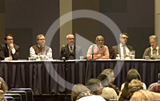

BIBFRAME 2.0, the Library of Congress Pilot & Next Steps - June 12, 2018
Beacher Wiggins highlighted the goals and accomplishments of the Library of Congress' BIBFRAME 2.0 pilot to date and gave an overview of the next steps. Nate Trail discussed the development of the BIBFRAME database, a complete base file that includes all the bibliographic records from Voyager. Jodi Williamschen and Les Hawkins discussed profiles developed for the BIBFRAME editor and illustrated workflows.
View Webcast
The SHARE-VDE Project: Fulfilling the Potential of BIBFRAME - February 6, 2018
Michele Casalini and Tiziana Possemato discuss the SHARE Virtual Discovery Environment in Linked Data, a library community-driven research and development project with the main goal of contributing in bringing BIBFRAME into practice for the benefit of librarians and library patrons. Through the individual processes of analysis, enrichment, reconciliation, conversion and publication of data from MARC21 to RDF, and in the context of libraries with different systems, habits and cataloguing traditions, a three BIBFRAME layer architecture environment is established.
View Webcast
BIBFRAME on the Move - September 6, 2016
Beacher Wiggins describes what has been accomplished to date on the Bibliographic Framework Initiative (BIBFRAME). Kirk Hess and Paul Frank cover how the BIBFRAME Editor has evolved, including the development of the profiles for metadata input. The session concludes with a briefing from Sally McCallum on what to expect in Phase two of the BIBFRAME Pilot and future training plans detailed by Judith Cannan.
View Webcast
BIBFRAME in Action: Library of Congress BIBFRAME Pilot - October 20, 2015
The BIBFRAME Pilot is underway and is a component of a major effort by the Library of Congress to lead the library community into the linked open data world. Developing BIBFRAME requires involvement of information specialists to create a new ecosystem in which bibliographic data are compatible with the broader World Wide Web environment. Speakers will discuss progress to date, relevance of BIBFRAME in today's environment, and the current status of the BIBFRAME Editor, including a demonstration of the modifications to the Editor from a programmer's perspective.
View Webcast
Bibliographic Framework Initiative (BIBFRAME) Update - February 1, 2015
The Bibliographic Framework Initiative (BIBFRAME) is a major community challenge to provide an alternative to the deeply embedded MARC formats that will be more compatible with the Internet and linked data environment, and that offers new opportunities to leverage information. This update at the Midwinter Meeting of the American Library Association in Chicago, Ill., shares information on current developments as work continues on this significant effort.
View Webcast
Bibliographic Framework Initiative (BIBFRAME) Update - September 4, 2014
Development of BIBFRAME requires the involvement of information specialists and creators of bibliographic data to develop a new bibliographic ecosystem in which bibliographic data is more compatible with the broader World Wide Web environment. This session is another in a series that introduces staff to BIBFRAME. The speakers will demonstrate the BIBFRAME Editor, the tool to input bibliographic data into the BIBFRAME format, and will highlight other developments.
View Webcast
Bibliographic Framework Initiative (BIBFRAME) Update - June 29, 2014
The Bibliographic Framework Initiative (BIBFRAME) is a major community challenge to provide an alternative to the deeply embedded MARC formats that will be more compatible with the Internet and linked data environment, and that offers new opportunities to leverage information. This update at the Annual Meeting of the American Library Association in Las Vegas, Nev., shares information on current developments as work continues on this significant effort.
View Webcast
Bibliographic Framework Initiative (BIBFRAME) Update - January 26, 2014
The Bibliographic Framework Initiative (BIBFRAME) is a major community challenge to provide an alternative to the deeply embedded MARC formats that will be more compatible with the Internet and linked data environment, and that offers new opportunities to leverage information. This update at the Midwinter Meeting of the American Library Association in Philadelphia, Pa., on January 26, 2014, shares information on current developments as work continues on this significant effort.
View Webcast
Bibliographic Framework Initiative (BIBFRAME) Update - November 22, 2013
As part of the Library of Congress' "Digital Futures and You" series, Beacher Wiggins sponsored a Bibliographic Framework Initiative (BIBFRAME) Update on November 22. Introduced by Wiggins, Sally McCallum from the Library of Congress reviewed progress and plans for the project, Vinod Chachra from VTLS described his testing of BIBFRAME in implementations, and Eric Miller of Zepheira gave a glimpse of the input module that Zepheira has been developing as part of their contract with the Library of Congress.
View Webcast
BIBFRAME Update Forum at ALA Annual - June 30, 2013
This presentation addressed multiple facets of the development of BIBFRAME and how it will attempt to span the different data models of the library and related communities. Two institutions that are experimenting with the general model were asked to report, along with a discussion of its relationship to schema.org, the recent search engine attempt at standardization. Speakers included: Roberta I. Shaffer & Sally McCallum (Library of Congress); Eric Miller (Zepheira); Jeremy Nelson (Colorado College); Vinod Chachra (VTLS, Inc.); and Carol Jean Godby (OCLC Research).
View Webcast
BIBFRAME Update Forum at ALA Midwinter - January 27, 2013
The Library of Congress sponsored an update forum on the Bibliographic Framework Transition Initiative ALA Midwinter Meeting on January 27, 2013. Speakers included: Roberta I. Shaffer, Sally McCallum, Kevin Ford & Beacher J.E. Wiggins (Library of Congress); Ted Fons (OCLC); Eric Miller (Zepheira); and, Reinhold Heuvelmann (Information Standards Specialist at the Deutsche Nationalbibliothek).
View Webcast
- "Experience with the Bibframe Model," [PDF, 1.2 MB] , Presented by Reinhold Heuvelmann
- "The Early Experimenters Experience & What's Happening at OCLC," [PDF, 1928 KB], Presented by Ted Fons
- "BIBFRAME and the World Wide Web," [PDF, 7673 KB], Presented by Eric Miller
- "BIBFRAME: Proposed Roadmap," [PDF, 324 KB], Presented by Sally McCallum
New Bibliographic Framework Initiative Update Forum with Eric Miller- July 16, 2012
The new Bibliographic Framework Initiative is focused on the Web environment, Linked Data principles and mechanisms, and the Resource Description Framework (RDF) as a basic data model. Zepheira, led by Eric Miller, will provide both a model (or models) to serve as a starting point for discussion and an analysis of related initiatives. Miller spoke to Library of Congress staff with an overview of the project and a report of progress to date.View Webcast
Additional Presentations
- "LC Bibliographic Framework Initiative: An Update" [PDF, 692 KB]
(November 29, 2012) Presented by Kevin Ford - "Bibliographic Framework Initiative Approach for MARC Data as Linked Data" [PDF, 513 KB]
(September 13, 2012) Presented by Sally McCallum - "Bibliographic Framework Initiative: Data from MARC," [PDF, 300 KB]
LITA/ALCTS Formats Transition Interest Group (ALA Midwinter, January 26, 2013), Presented by Sally McCallum - "When URIs become authority: Benefits and challenges of library Linked Data," [PDF, 420 KB]
ALCTS Subject Analysis Committee (SAC) (ALA Midwinter, January 28, 2013), Presented by Kevin Ford